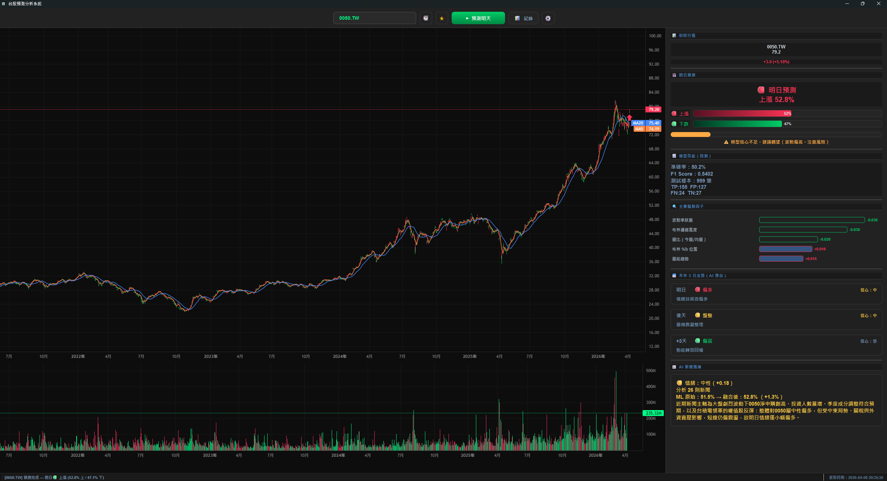
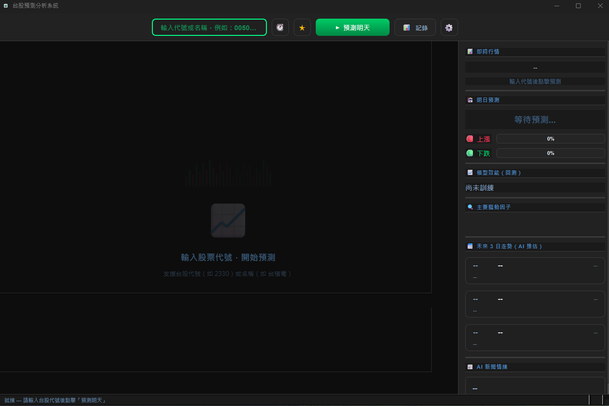
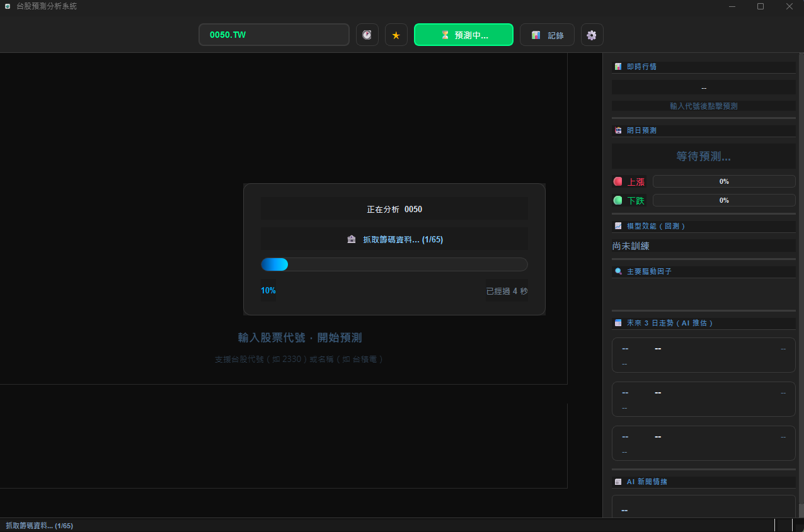

一套安裝在電腦上的台股漲跌預測工具。輸入任何一支台灣股票代碼（例如 0050、2330），系統就會告訴你：
系統分三步，就像問三個不同的專家然後綜合意見：


| 作業系統 | Windows 10 / 11（64 位元） |
| 硬碟空間 | 約 700 MB |
| 網路 | 需要連網（抓股價資料和新聞） |
| 安裝方式 | 解壓即用，不需安裝 Python 或其他依賴 |
| OpenAI API Key | 需自行申請（用於 AI 新聞分析） |
| Brave Search Key | 選用，有的話新聞搜尋品質更好 |
v1.5.0 ｜ Windows 10 / 11 ｜ 約 650 MB ｜ 解壓即用